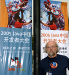

JavaChina
We've been holding a big Java event in China for the past couple of
days, following NetBeans day on Monday. JavaChina is roughly
similar to JavaOne. We had about 8000 addendees who've been through
two days of intense training sessions. I've been doing so much
talking to so many groups that my throat needs a retread. Really
cool. There's a great developer community here in China. The low
point was when I started my main talk in a 4000 seat room stuffed
to the rafters, the slides that came up on the screen were totally
wrong: they were the ones for a talk I gave last week in St
Petersburg. The big photo of a Russian Orthodox cathedral on the
first slide was a big surprise. 10 minutes of vamping later, the
stage crew finally got it sorted out [Thanks Bob!]. *blush*